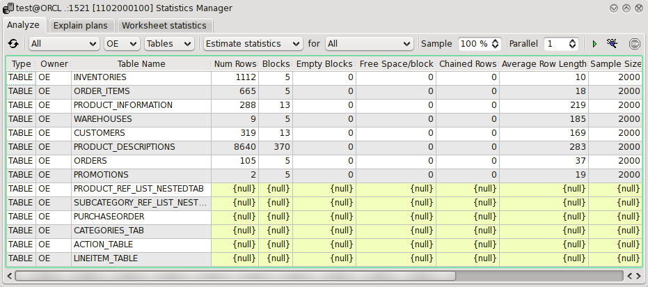

4.14 Statistics manager
This tool is useful for collecting statistics and analysing tables in parallel. You can also use it to browse collected statistics.

You control the interface through the controls in the toolbar. The rest of the interface simply displays currently available tables in the current schema. When collecting statistics only the selected items in the tablelist are analysed.
- Refresh
- Refresh the table list from the database.
- Schema
- The next control is which schema to investigate tables for.
- Operation
- What operation to perform. Select one of compute statistics, estimate statistics, delete statistics and validate references.
- Target
- Depending on the operation you can sometimes select what kind of statistic to collect. Choose between all, table, indexed columns and local indexes.
- Sample
- If the operation is estimate statistics you can choose how large sample should be used to estimate the statistic information in percent of total amount of data.
- Parallel
- Indicate the number of separate connections to open to the database and run collecting statistics concurrently when collecting.
- Start analyzing
- Press this button to perform the indicated operation on the tables selected in the list below the toolbar.
- Stop
- Stop current run. Before the stop button you can also see information about the currently running statistics gathering run if any is running.